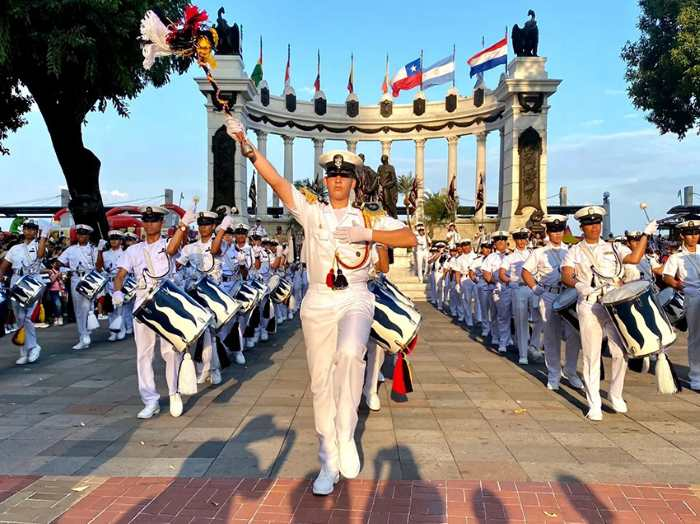

Desfile del 9 de Octubre
Bienvenidos al sitio dedicado al desfile cívico-estudiantil en conmemoración de las fiestas de independencia de Guayaquil.
Guayaquil celebra su independencia con el desfile cívico-estudiantil.
Un homenaje a la ciudad y su gente.
Bienvenidos al sitio dedicado al desfile cívico-estudiantil en conmemoración de las fiestas de independencia de Guayaquil.

Información sobre el desfile cívico-estudiantil del 9 de Octubre.
Los actores y grupos que hacen posible el desarrollo del desfile.
Estudiantes de distintas instituciones educativas que marchan representando a sus colegios con orgullo cívico.
Agrupaciones que animan el recorrido con música, danza y expresiones culturales propias de Guayaquil.
Profesores, padres de familia, visitantes y autoridades cívicas que acompañan y apoyan el evento.
Resultados y percepciones obtenidas durante las entrevistas a los asistentes del desfile.
El evento genera un impacto económico positivo para los comerciantes locales del centro de la ciudad.
Valoración ciudadana sobre el espacio físico, nivel de organización y seguridad durante las marchas.
Testimonios sobre cómo el desfile une a la comunidad guayaquileña en torno a su identidad y tradición.
Propuestas y retroalimentación de los asistentes para mejorar futuras ediciones del desfile.
Sugerencias de mejoras en la organización y logística del evento para próximas ediciones.
Actividades y elementos innovadores propuestos por la ciudadanía para enriquecer el desfile.